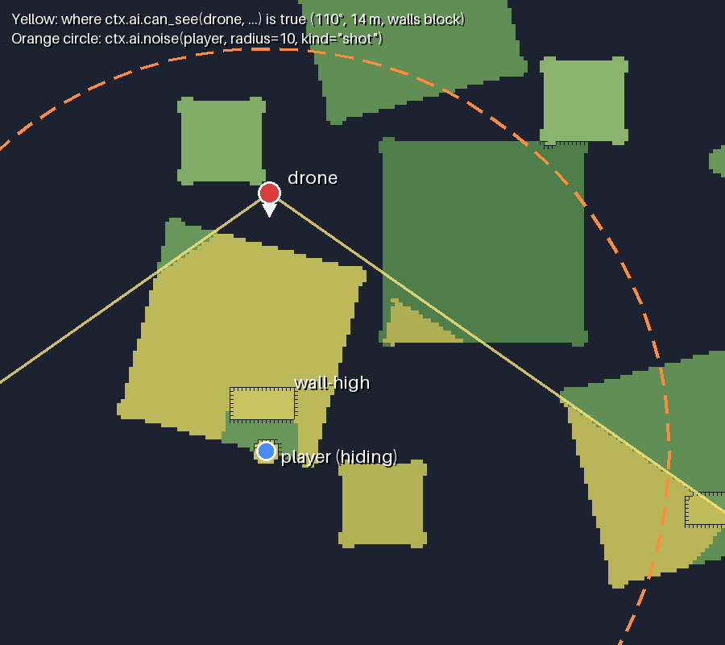

AI

ctx.ai gives scripts the building blocks for enemies, guards and
creatures that make decisions:
| What it does | Use it for | |
|---|---|---|
| State machines | One mood at a time (patrol, chase, search), each with its own code, and clear rules for switching | Most enemies |
| Behaviour trees | Small tasks plugged together: "try this, else that", "do these in order", "wait 2 s" | Bosses and characters with lots of options |
| Sight | ctx.ai.can_see(viewer, target): a cone in front of the viewer, blocked by walls | Noticing the player |
| Hearing | ctx.ai.noise(...) makes a noise; ctx.ai.hear(listener) returns the ones that reach it | Gunshots, footsteps, alarms |
It's all plain Python in the shared script API, so it works the same in
Play, in exported games, in run_scene and in tests.
The FPS example uses a state machine with sight and hearing: its drones look around until they see you or hear a shot, chase you, and search where they lost you. See the tutorial.
State machines#
A state machine is always in exactly one state. Each state is a function that runs every frame while it's active. Returning the name of another state switches to it:
def patrol(entity, ctx):
entity.nav.go(entity.state["post"])
if ctx.ai.can_see(entity, "Player"):
return "chase"
def chase(entity, ctx):
entity.nav.go("Player")
if not ctx.ai.can_see(entity, "Player"):
return "patrol"
def start(entity, ctx):
entity.state["post"] = entity.transform.position
entity.state["brain"] = ctx.ai.state_machine(
{"patrol": patrol, "chase": chase}, initial="patrol")
def update(entity, ctx):
entity.state["brain"].update(entity, ctx)Make the machine in start and keep it in entity.state, so each entity
has its own.
A state can also be a dict (or an object) with enter, update and
exit, any of which may be missing. enter runs once on the way in,
exit once on the way out:
brain = ctx.ai.state_machine({
"idle": {"enter": stop_moving, "update": look_around},
"alarm": {"enter": sound_the_alarm, "update": run_to_the_button, "exit": calm_down},
})State functions are called with (entity, ctx), or `(entity, ctx,
machine)if they take a third argument, which is handy formachine.time`
(how long it's been in this state).
Instead of returning names, you can list the rules separately with when.
They're checked every frame before the state's update; "*" means "from
any state":
brain.when("patrol", "chase", lambda e, c: c.ai.can_see(e, "Player"))
brain.when("*", "flee", lambda e, c: e.attributes["health"] < 20)StateMachine | |
|---|---|
update(entity, ctx) | Runs one frame: the rules, then the state's update. Returns the state it's in |
state | The current state's name (None before the first update) |
previous | The one before |
time | Seconds in the current state (from ctx.time.delta) |
go(name) | Switch now (exit, then enter) |
is_in(*names) | True if it's in any of them |
add(name, spec, enter=, update=, exit=) | Add or replace a state |
when(source, target, condition) | A switching rule; condition(entity, ctx) |
history | The last 16 states, oldest first |
states | Every state's name |
on_change | Set to fn(entity, ctx, old, new) to hear about every switch |
A misspelt state name raises KeyError with a suggestion.
Behaviour trees#
A behaviour tree is built from nodes. Every frame you tick the root,
and each node answers SUCCESS, FAILURE or RUNNING (not done yet,
tick me again next frame). Plain functions become actions: returning
True (or nothing) is success, False is failure, and returning
ctx.ai.RUNNING keeps it going.
def attack(entity, ctx):
ctx.audio.play("sounds/swing.ogg")
def go_home(entity, ctx):
entity.nav.go(entity.state["home"])
return True if entity.nav.arrived else ctx.ai.RUNNING
def start(entity, ctx):
ai = ctx.ai
entity.state["tree"] = ai.selector( # the first that doesn't fail
ai.sequence( # all of these, in order
ai.condition(lambda e, c: c.ai.can_see(e, "Player", distance=2)),
ai.cooldown(1.5, attack),
),
ai.sequence(go_home, ai.wait(3.0)),
)
def update(entity, ctx):
entity.state["tree"].tick(entity, ctx)| Node | Answers |
|---|---|
ai.action(fn) | What fn(entity, ctx) returns |
ai.condition(fn) | SUCCESS if fn is true, else FAILURE; never running |
ai.sequence(*children) | Runs the children in order; fails at the first failure, succeeds when all succeed. A running child is carried on next frame |
ai.selector(*children) | Tries the children in order; succeeds at the first success. Starts from the top every frame, so a higher-priority branch can take over |
ai.parallel(*children, need="all") | Ticks every child each frame; succeeds when all (or with need="one", one) succeed |
ai.invert(child) | Swaps success and failure |
ai.succeed(child) | Success whatever the child says (once it's done) |
ai.repeat(child, times=None) | Runs the child again and again (forever, or times times), once per frame |
ai.wait(seconds) | Running for that long, then success |
ai.cooldown(seconds, child) | Runs the child; once it succeeds, fails straight away for seconds (a shot, a shout) |
Every node has tick(entity, ctx), status (its last answer), reset()
and describe(), which prints the tree with each node's status, handy
with ctx.log.
Which to use? A state machine is easiest when a character has a few clear moods. A tree is better when it has many options in a priority order, such as a boss that heals if it's hurt, else attacks if you're close, else walks over.
Sight#
if ctx.ai.can_see(entity, "Player", fov=110, distance=15):
...`can_see(viewer, target, fov=120, distance=20, eye=1.6, aim=1.0, forward=(0, 0, -1), walls=True)` is true when the target is:
- within
distancemetres, - inside a cone
fovdegrees wide around the way the viewer faces (forward, which is −Z unless you say otherwise, turned by the viewer's rotation), and - not behind anything: a ray from the viewer's eye (
eyem above its origin) to the target's middle (aimm above its origin) must reach it first.walls=Falseskips the ray.
The target can be an entity, a name or an (x, y, z) point. The viewer
needs to face where it's looking: turn it with transform.rotation_euler
or a Nav Agent's Face Movement. Walls are anything with a collider.
ctx.ai.visible(viewer, targets=None, ...) takes the same options and
returns every entity in targets (default: all of them) that the viewer
can see, nearest first.
Hearing#
A noise is a point with a radius: anything inside the circle can hear it. Make one when something loud happens:
ctx.ai.noise(entity, radius=10, kind="shot") # from where this entity is
ctx.ai.noise((4, 0, 2), radius=25, kind="alarm")Listeners ask what reached them this frame:
for noise in ctx.ai.hear(entity, kinds="shot"):
entity.state["clue"] = noise.positionctx.ai | |
|---|---|
noise(position_or_entity, radius=10, kind="noise", source=None) | Makes a noise. From an entity, that entity is its source and doesn't hear it. Returns the Noise |
hear(listener, hearing=1.0, kinds=None) | The noises within radius × hearing of the listener that it hasn't heard yet, closest (for their radius) first. hearing=2 for sharp ears; kinds a label or a list of them |
noises | Every noise still around |
A Noise has position, radius, kind, source (a name, or None),
time (ctx.time.elapsed when it was made) and distance (from the
listener). A noise lasts this frame and the next, so a listener whose
script runs before the noisy one still hears it. Each listener hears each
noise once.
Noises don't play sounds: call ctx.audio.play as well.
In Python#
Python games get the same classes from automata.ai:
from automata import ai
brain = ai.StateMachine({"idle": idle, "chase": chase}, initial="idle")
tree = ai.Selector(ai.Sequence(ai.Condition(close), attack), wander)
assert tree.tick(entity, ctx) in (ai.SUCCESS, ai.FAILURE, ai.RUNNING)Sight and hearing need a ctx with physics.raycast and time, as in
run_scene. To test a script with a fake ctx, give it the real helpers
with from automata.script_api import AI and ctx.ai = AI(ctx), as
the FPS tests do.
Tips#
- Remember what was seen.
can_seeanswers for this frame only. Keep the last place you saw the player inentity.state, so the enemy can go there when it loses them. - Don't let sight flicker. Wait a little (
s["unseen"] > 3) before giving up, otherwise a pillar passing in front switches states every frame. - Line of sight is a ray. Only colliders block it, so put a collider on every wall and crate that should hide the player. The target's own collider (and anything close to it) counts as a hit on the target.
- Raise the eye for tall enemies and lower
aimfor crouching targets. - Debug with
describe().ctx.log(tree.describe())andctx.log(brain.history)show what the AI was thinking.